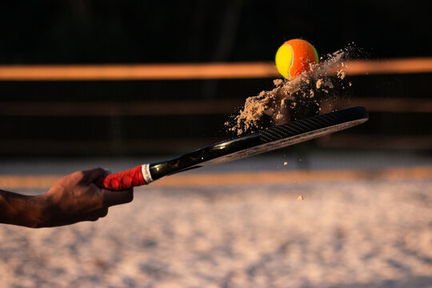

O beach tennis é um esporte que se assemelha ao vôlei de praia, porém, conta algumas particularidades, como o uso de uma raquete e bolinhas próprias para a prática. Trata-se de um jogo bastante dinâmico, cujo objetivo consiste na devolução da bola ao campo adversário, sem que ela toque no chão.
